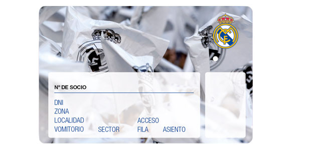

OFICINA DE ATENCIÓN AL SOCIO
OFICINA DE ATENCIÓN AL SOCIO
Tanto la Oficina de Atención al Socio de Ciudad Real Madrid como la del Santiago Bernabéu se encuentran temporalmente cerradas. Las consultas o trámites que deban realizar los socios se llevarán a cabo a través de la Oficina online de Atención al Socio y del correo: oas@corp.realmadrid.com
Oficina para la atención personalizada del socio, donde podrán realizar todos los trámites que deseen y solucionar todas sus consultas. El Real Madrid ofrece este servicio de atención a sus socios:
Direcciones:
Estadio Santiago Bernabéu
C/ Padre Damián, puerta 55
28036 – Madrid
Ciudad Real Madrid
Avda. de las Fuerzas Armadas 402
28055 - Madrid
CARNÉ DE SOCIO
CARNÉ DE SOCIO
Los socios del Real Madrid son todas aquellas personas físicas que integran la entidad Real Madrid con los derechos y obligaciones contenidos en los Estatutos.
CONDICIONES ESPECIFICADAS EN LA TARJETA
Todos los socios, desde el momento en que ingresan en la entidad, reciben su carné de socio que contiene su nombre y apellidos, su fotografía, la fecha de alta como Socio en el Club y un número. Este número se asigna por estricto orden de ingreso en la entidad, de manera que el socio con más años de antigüedad en el club será el socio número 1 y el último socio inscrito recibirá el número más alto que correspondiera en el momento de su ingreso.
El carné de socio, con su correspondiente numeración, es un documento oficial, personal e intransferible, que acredita la condición de socio, por lo que no es posible traspasarlo de un socio a otro ni permitir su uso a terceras personas.
Cada cierto tiempo, el club actualiza la numeración de los socios, eliminando las bajas que se hayan producido entre el último proceso de actualización y el siguiente. La última renumeración se realizó durante el verano de 2016, y el Club envió a todos los Socios un nuevo carné con una nueva numeración a su domicilio. Estas campañas periódicas de actualización de números de Socio suponen no sólo una modificación en el diseño del carné, sino también un reajuste de la numeración en función de la antigüedad real de cada Socio.
TARJETA DE ABONADO
TARJETA DE ABONADO
La tarjeta de abono es el documento que expresa el derecho de un Socio a asistir a los partidos que se disputen en el Estadio Santiago Bernabéu dependiendo de la modalidad (abono tradicional o Euroabono), y a ocupar la localidad especificada en la tarjeta por el periodo, tiempo y forma que se concierte al emitirlo.

Solamente los Socios pueden optar a un abono. Es decir, para ser abonado es imprescindible ser Socio. A diferencia del carné de Socio, las tarjetas de abono son transferibles por lo que el Socio puede permitir su uso a una tercera persona, o bien cederlo al Club para que otros Socios sin abono tengan la posibilidad de adquirir una entrada, con lo que podrá obtener un descuento en la renovación de su abono para la siguiente temporada. En cualquier caso, el Socio titular del carné y del abono será el responsable de su buen uso en todo momento.
El Real Madrid remitió por correo a todos los socios abonados, el nuevo carné de socio y tarjeta de abono con el número de socio actualizado, que sustituyen a los anteriores documentos, a todos los efectos.
Para poder acceder al Estadio, es obligatorio hacerlo con el nuevo abono. Si no dispone de él, puede solicitar un duplicado en la Oficina de Atención al Socio (Estadio Santiago Bernabéu, calle Padre Damián puerta 55)..
En el caso de que no se pueda presentar el titular, podrá hacerlo una persona autorizada, debiendo presentar la siguiente documentación:
• Autorización firmada por el socio titular.
• Fotocopia del DNI del socio titular.
• DNI original, de la persona autorizada, que deberá ser mayor de edad.
Si el titular es menor de edad, y el duplicado lo solicita la madre, el padre o el tutor legal, es necesario presentar la siguiente documentación:
• Fotocopia del DNI del socio menor de edad o, en su defecto, fotocopia del libro de familia.
• DNI original del padre, madre o tutor legal de menor.
Si la persona que solicita el duplicado, no es el padre, madre o tutor legal del menor; ha de presentar la siguiente documentación:
• Fotocopia del DNI del socio menor de edad o, en su defecto, fotocopia del libro de familia.
• Autorización firmada del padre, madre o tutor legal del menor.
• Fotocopia del DNI del padre, madre o tutor legal del menor.
• DNI original de la persona autorizada, que deberá ser mayor de edad.
ACTUALIZACIÓN DATOS PERSONALES
ACTUALIZACIÓN DATOS PERSONALES
Todos los socios tienen derecho a la rectificación de sus datos personales que figuran en la base de datos del Real Madrid.
Los datos que pueden modificar son los siguientes: dirección postal, número, escalera, piso, C.P., población, provincia, país, teléfono móvil, teléfono fijo, teléfono de oficina, email, profesión y empresa.
Pueden facilitarnos los nuevos datos a través de los siguientes procedimientos:
1. A través de la Oficina online de Atención al Socio.
2. Enviando un fax a la oficina de atención al socio (91 398 43 41) o un email a oas@corp.realmadrid.com indicando en el asunto del escrito “Actualización de datos personales”, su nombre completo, número de socio y DNI. Debe aportar en documento adjunto una copia fotocopiada o escaneada del DNI y del carné del socio que solicita el trámite por las dos caras.
Cualquier trámite puede ser solicitado personalmente por el propio socio en la Oficina de Atención al Socio identificándose con su DNI original y carné de Socio. Si solicita el trámite una tercera persona, deberá presentar una autorización escrita y firmada por el socio facultándole a realizar dicha gestión y una copia del DNI del socio por las dos caras.
En el caso de los Socios menores de edad, cualquier trámite debe ser solicitado por el padre madre o tutor legal del menor, acreditándolo convenientemente.
VENTAJAS Y DESCUENTOS
Ventajas y Descuentos
1. Canales exclusivos de atención e información
Oficinas de Atención al Socio: Estadio Santiago Bernabéu, C/ Padre Damián, puerta 55. Ciudad Real Madrid, Avda. de las Fuerzas Armadas 402. Horario: lunes a viernes de 9:00 a 19:00 horas.
En caso de celebrarse algún partido entre semana, la oficina de atención al socio Estadio Santiago Bernabéu (OAS ESB) cerrará 3 horas antes del inicio del partido. La oficina de atención al socio Ciudad Real Madrid (OAS CRM), cerrará 4 horas antes del inicio del partido.
Línea de Atención al Socio: 913 445 445.
Horario: todos los días de la semana de 9:00 a 21:00 ininterrumpidamente.
2. Reconocimiento
Cada Socio recibe un reconocimiento por sus años de antigüedad ininterrumpida en el club:
Insignia de plata a los 25 años.
Insignia de oro a los 50 años.
Insignia de brillantes a los 60 años.
Además, a partir de los 50 años como Socio, la cuota es gratuita.
3. Compra de entradas de fútbol
Sólo los Socios pueden ser abonados (en función de la disponibilidad existente) y disfrutar de preferencia en la compra de localidades a través de los diversos canales que el club pone a su disposición:
Teléfono de venta exclusivo para Socios: 902 24 48 24.
www.realmadrid.com/entradas
Compra en las taquillas del estadio (ventanillas exclusivas y en días también exclusivos).
Descuentos en el precio de las localidades en torno al 20%.
Prioridad en la compra de entradas para los partidos fuera de casa.
Opción exclusiva de conseguir una entrada para finales en las que participe el Real Madrid.
4. Descuento en entradas electrónicas
Los Socios del club disponen de descuentos en las entradas electrónicas.
5. Abonos de baloncesto y compra de entradas
Los Socios del club disponen de ventajas exclusivas y descuento en abonos y entradas de baloncesto.
Teléfono de venta exclusivo para Socios: 902 24 48 24.
www.realmadrid.com/entradas/baloncesto
Compra en las taquillas del Estadio Santiago Bernabéu y en el WiZink Center (ventanillas exclusivas).
6. Acceso gratuito al Tour del Bernabéu
Nuestros Socios tienen acceso gratuito al Tour del Bernabéu. Presentando su carné de Socio en la taquilla 10 del estadio le facilitarán una entrada.
7. Acceso gratuito a los partidos del Real Madrid Castilla
Los Socios tienen preferencia y podrán acceder a los partidos del Real Madrid Castilla de forma gratuita presentando su carné de socio en las taquillas centrales del Estadio Santiago Bernabéu (puerta 42), la misma semana del partido de 10:00 a 19:00 horas, y el día del partido en las taquillas para Socios del Estadio Alfredo Di Stéfano, en la Ciudad del Real Madrid (Valdebebas).
8. Acceso gratuito a los entrenamientos del Primer Equipo
Los Socios del Real Madrid pueden visitar gratis los entrenamientos de la plantilla del primer equipo siempre que se disputen en abierto.
9. Descuentos en tiendas Real Madrid y tiendas asociadas
Descuento de un 10% en las compras realizadas en las Tiendas Oficiales del Real Madrid.
10. Descuentos en el Real Café, Asador de La Esquina del Bernabeu y Zen Market
10% de descuento en el RealCafé Bernabéu, Asador de La Esquina del Bernabéu y Zen Market.
11. Descuentos en la Fundación Real Madrid
Condiciones especiales para la inscripción a las escuelas y campus deportivos de fútbol y baloncesto, organizados por la Fundación Real Madrid.
12. Revistas y publicaciones gratuitas
Recepción gratuita en su domicilio de la revista trimestral Hala Madrid y Tiempo de Descuento.